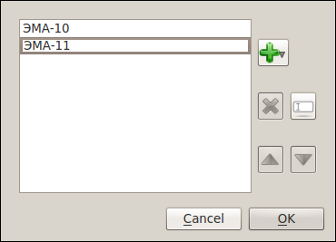

[Назад: 2.4. Управление инвайтами]
Управление группами
Как и в университете, в системе CloudLab пользователи (студенты) относятся к определенным группам. Пользователь может
видеть и скачивать только те лабораторные работы, которым назначена та же группа, в которой он состоит. Модераторы и
администраторы (преподаватели) автоматически состоят во всех группах, даже если это не указано явно. Добавлять и
удалять группы может только пользователь с правами администратора.
Для управления группами выберите в меню "CloudLab" пункт "Инструменты", в нем - пункт
"Администрирование" и, наконец, в последнем меню - пункт "Управление группами...". Появится окно
следующего вида:

Чтобы добавить группу, выполните двойной щелчок на выделенной пустой строке списка, введите название группы и нажмите
клавишу Enter. Группы можно также удалять и перемещать вверх и вниз по списку при помощи соответствующих кнопок справа
от списка.
[Назад: 2.4. Управление инвайтами]